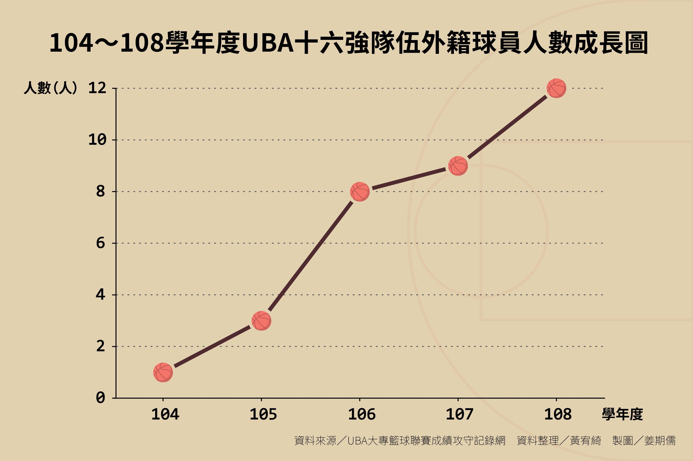
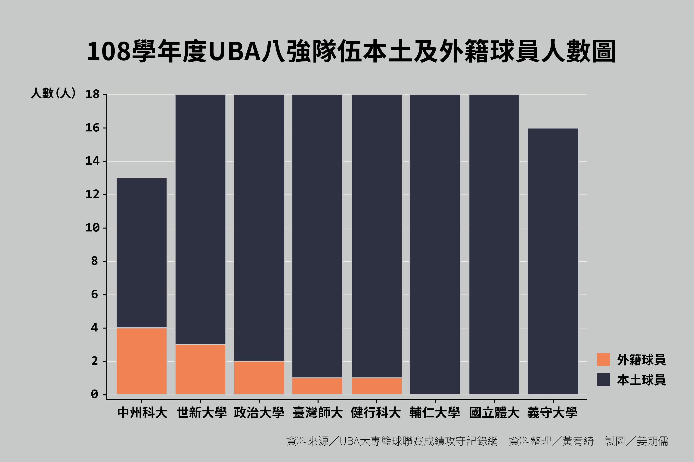
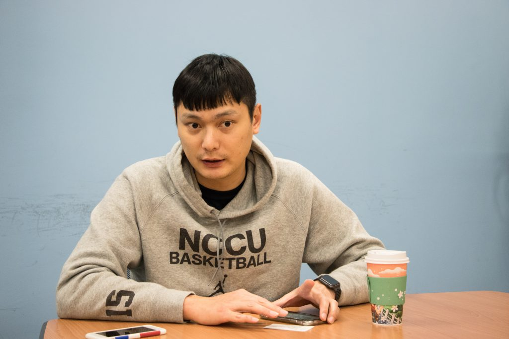
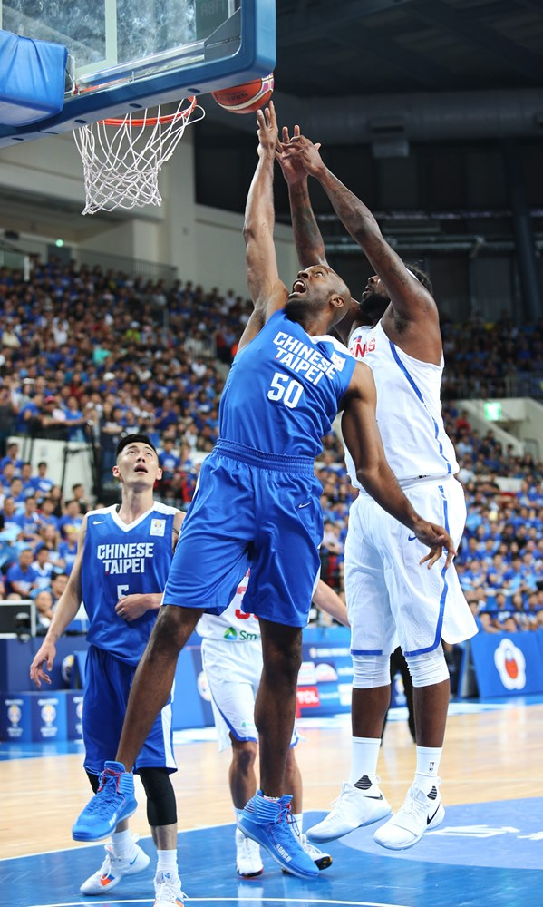
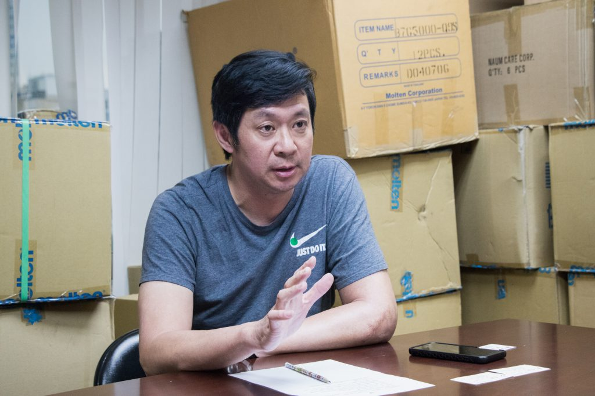
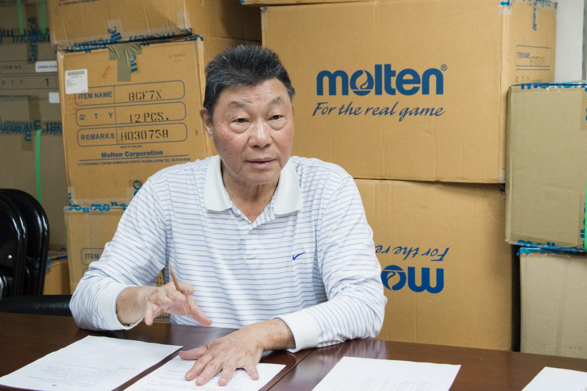
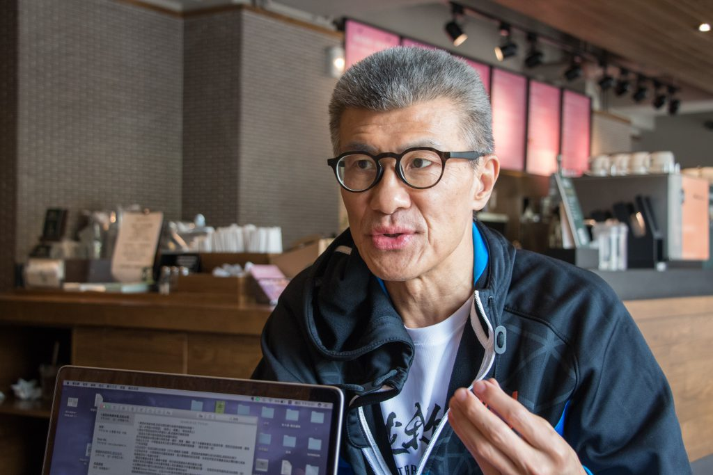
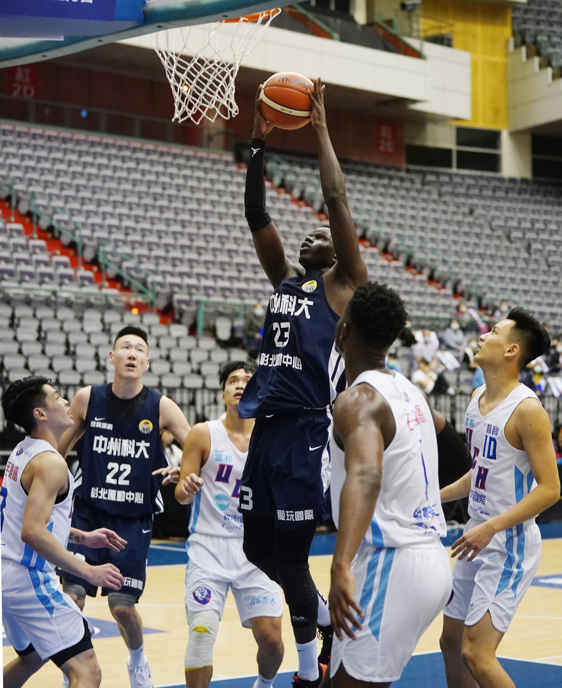

專題
台灣籃壇注入新勢力？ UBA黑軍團的進擊
刊出日期：2020/03/27
【專題記者黃宥綺、姜期儒、陳宣懿、李昱亭綜合報導】「阿巴西雙手爆扣，展現驚人彈跳能力，全場球迷陷入瘋狂！」108學年度大專校院籃球運動聯賽（University Basketball Association,
UBA）八強賽，世新大學來自塞內加爾的阿巴西（Mohammad al Bachir
gadiaga）發揮身材優勢，為賽事掀起高潮。阿巴西目前正在放棄母國國籍，辦理中華民國身分證，即將成為「新台灣人」的他靦腆地說：「我很喜歡台灣，特別喜歡環境和人情。」阿巴西表示，若有機會，非常願意披上中華隊戰袍。
2021年亞洲盃籃球賽資格賽，中華隊不敵擁有兩名歸化球員的日本隊，以39分之差落敗，「中華隊急需一個歸化球員」成了賽後迫切討論的議題。近年來的UBA賽事中，各大學也為提升球隊戰績，極力招攬外籍球員。而這些外籍球員，是否有機會成為中華隊的一員呢？
提升內線競爭力 UBA球隊引進外籍球員

近年來，UBA缺乏長人，為了補足隊上內線戰力，眾多學校找來身高近200公分的外籍球員助陣。108學年度16支公開一級賽的參賽隊伍中，有超過三分之一的隊伍擁有外籍球員，世新大學更是有三名外籍球員坐鎮。今年最終打進四強的隊伍中，就有三隊擁有外籍球員，分別為：國立臺灣師範大學澳門籍容毅燊、中州科技大學塞內加爾籍斑霸（Sarr
Cheikh Ahmadou Bamba）、蒙古籍蘇格爾（Sugar Ochir Erdenetseg）、沙鹿（Saruulerdene
Enkhbaatar）及白薩（Bayasgalanelgerchuluun），和健行科技大學聖文森籍石博恩（Brendon Smart）。在四名外籍球員的幫忙下，108學年度中州科大拿下隊史最佳第三名的佳績。

對於UBA這股「黑潮」來襲，部分球評和教練持不同的看法。知名球評李亦伸不贊成外籍學生大量進入UBA，他說：「目前在台灣的外籍球員都不夠優秀，就現階段UBA整體環境來說沒有太大的幫助。」國立體育大學籃球隊教練桑茂森則持樂觀態度。他認為，及早讓本土球員面對高大的外籍球員，能藉此體驗國際賽的強度。國立政治大學雄鷹籃球隊總教練陳子威也認為，引進外籍球員能讓UBA具更高的張力，吸引更多民眾進場觀賽。不過他也坦言，引進外籍球員具有一些隱形成本。

國立政治大學雄鷹籃球隊總教練陳子威認為，外籍球員的加入能讓UBA的戰局多變且更有可看性。 圖／姜期儒攝
以政大為例，塞內加爾籍球員聶歐瑪（Seydina Omar
Niang）剛抵台時，只會說法語。陳子威表示，在政大華語文中心的協助下，聶歐瑪迅速辦理停留簽證，提早至6月來台適應環境。否則，若聶歐瑪持學生簽證入台，必須等到9月才能來台就學。但每年UBA從11月開打，聶歐瑪恐怕無法同時肩負球隊訓練及語言課程。加上政大歐洲語文學系學生從旁協助翻譯工作，才讓聶歐瑪更快融入在台生活。
陳子威認為，球隊整合學校資源有助於外籍球員來台打球。
歸化球員實屬不易 籃壇新星何處尋？
就UBA現況而言，各校要招攬外籍球員來台，必須付出不少成本。對比更高層級的中華隊，要歸化適合的外籍球員提升國際戰績，也須克服不少難關。
翻開過去台灣籃壇歸化球員歷史，僅有戴維斯（Quincy Spencer Davis
III）一名外籍球員，於2013年成功歸化。根據當時的《國籍法》規定，外國人須在台灣待滿五年才具歸化資格，且需放棄原國國籍。然而戴維斯2011年才來台效力於超級籃球聯賽（Super Basketball
League, SBL）的桃園璞園建築籃球隊，
因此不符歸化資格。為了讓戴維斯成功歸化，中華民國籃球協會（以下簡稱籃協）與內政部周旋，並以戴維斯成功帶領璞園隊拿下SBL三座總冠軍為由，最終內政部才以「對國家、社會有特殊貢獻」專案核准戴維斯歸化。

「新台灣人」戴維斯在2013年成功歸化，並帶領中華隊闖進當年亞洲籃球錦標賽四強。 圖／中華民國籃球協會提供
成為「新台灣人」後，戴維斯隨中華隊闖入2013年亞洲籃球錦標賽四強，也在台灣掀起一股籃球熱潮。然而，台灣籃球好景不長，戴維斯近年飽受傷勢困擾，回歸球場遙遙無期。尋找下一個歸化球員，成了急迫的任務。
招攬歸化球員誘因不足 籃壇理念不同成阻力
《國籍法》於2016年修法後鬆綁放棄原國國籍的規定，若是對於國家有功者或是各項領域（科技、經濟、教育、體育等）的高級專業人才，經行政院核准後，無需放棄原國國籍，便能成功歸化。但放寬歸化條件後，尋找適合的歸化球員的問題仍未改善。
依照國際籃球總會（International Basketball Federation,
FIBA）規定，球員一生僅能代表一個國家出賽。曾代表他國出賽的球員若想成為中華隊歸化球員，必須透過「轉籍」的方式，改變其代表國家。經由FIBA秘書長核准後，還要再繳交一筆行政費用，金額由秘書長決定。籃協副秘書長李雲翔表示，籃協曾與目前效力於璞園隊的賈西亞（Charles
Garcia）接洽，雖賈西亞有意願透過「轉籍」加入中華隊，然而一旦遭FIBA秘書長否決，賈西亞仍無法歸化。

中華民國籃球協會副秘書長李雲翔表示，曾代表母國出賽的賈西亞（Charles Garcia）雖有歸化意願，但國際籃球總會（International Basketball Federation,
FIBA）仍擁有否決權。 圖／姜期儒攝
外籍球員除了必須符合國內及FIBA的歸化條件外，月薪更是一大問題。一般來說台灣每個月給予歸化球員2萬美元，相較於其他國家月薪至少7、8萬美元起跳，誘因明顯不足，無法吸引優秀球員加入。此外，李亦伸更點出權責問題。籃協負責提歸化計畫交由體育署審核，並且由體育署負責支出費用，兩者間責任歸屬界線不明。

賈西亞目前效力於璞園隊，個人單打能力佳且擅長進攻對手禁區。 圖／中華民國籃球協會提供
除了籃協與體育署權責不明外，籃協與總教練對於遴選歸化球員條件的理念也不同。雖然籃協與中華台北男子籃球代表隊總教練查理．帕克（Charlie
Parker）透過「SBL外籍球員測試暨選秀會」（註）共同測試適合歸化的外籍球員，實際上總教練有全權決定人選。籃協的規劃是「先求有，再求好」，但帕克則是希望寧缺勿濫，因此近年來籃協未呈報歸化人選名單。除上述制度問題外，外籍球員融入台灣球風更是一大考驗。「戴維斯跟本土球員搭得非常好，他知道怎麼打比賽。」李亦伸提到，若外籍球員無法融入中華隊，再強也只是枉然。
註：SBL外籍球員測試暨選秀會由籃協主辦，除提供SBL教練選擇適合的洋將外，也讓中華男籃總教練及籃協觀望中隊歸化人選。
日本籃壇戰力提升 歸化制度台灣可借鏡
目前臺灣籃壇尚未順利找到歸化人選，反觀日本近年來在國際賽場上表現亮眼，成績明顯提升。而日本曾在兩個月內歸化兩名洋將，也顯示其在歸化球員制度下足苦功。為了籌備國際賽事，日本積極尋找海外擁有日本血統的年輕球員，甚至用非日籍球員補充戰力。李雲翔認為，日本球壇上有多位混血和歸化球員，歸功於日本政府政策開放與企業支持。
籃協副秘書長孫朝說明，早期日本政府鼓勵國內民眾移民國外，因此現今得以從國內外大量招募擁有日本血統的混血年輕球員。此政策不但提升日本人先天性的身體素質，也補足國內運動競技人才。

中華民國籃球協會副秘書長孫朝說明，日本早期鼓勵移民，因此間接補足國內運動競技人才。 圖／姜期儒攝
日本歸化制度的成功，也來自於日本籃球協會於2000年發起的「籃球20年中長期強化計畫」，在日本籃協官方網站中，計劃共分為基層選手的養成、籃球指導員的培訓與日本代表隊的實力強化。其中基層選手的養成包含給予外籍球員課業、職場方面的協助，再輔導外籍球員待在日本成家立業，熟悉當地文化並融入社會。日本籃協更進一步追蹤球員的小孩，提供優渥的訓練條件，積極培育他們成為日本籃壇上的戰力。
「我們所看到日本的歸化球員，都是企業幫他們養的。」李雲翔表示，為鼓勵企業培育優秀籃球好手，日本政府會給予抵稅等優惠措施。而日本職業籃球聯盟（B聯賽）裡的外籍球員薪水由球團企業全額給付，政府與日本籃球協會不需負擔任何費用。他更補充，台灣政府雖有意鼓勵企業投資球隊，但並未給予充分優惠條件，造成企業參與度低，更凸顯日本與台灣企業對於運動產業投資積極程度的差異。
此外，關於球隊洋將名額限制的規定，日本比台灣開放許多。現今B聯賽多達30支隊伍中，每隊可擁有三名洋將以及一名歸化球員。由於將歸化球員視為本土球員，因此不佔職業球團的洋將名額，反觀台灣規定目前SBL的五支球隊中，每隊只能有兩名外籍球員。相較之下，日本國家隊有更多人才資源可供選擇，並透過觀察找尋最適合的人選。帕克坦言，台灣的人才並不如日本選擇多，若想尋求合適外籍球員，勢必要到國外親自觀看球員表現。
籃協盼放寬聯賽限制 延續UBA外籍球員籃球路
帕克表示，現階段仍主要考慮歸化有職業運動經驗的球員，如效力於台灣SBL球隊或他國聯賽的洋將。李亦伸解釋，打籃球不只需要身高，也需具備協調性及爆發力，「最重要的是還要有腦袋。」UBA外籍球員具備高大的身材及良好的身體素質，但因接受正規籃球訓練的時間不長，所以經驗較少，解讀球賽的能力自然不高。因此，UBA外籍球員現階段難成為中華隊的歸化球員。

知名球評李亦伸解釋，因UBA外籍球員較晚接觸籃球正規訓練，目前較難成為中華隊歸化人選。 圖／姜期儒攝
然而，知名球評賈凡認為，UBA外籍球員的籃球技術雖非頂尖，但運動條件非常好，經過良好的訓練之後，有機會成為非常優秀的球員。孫朝透露，目前已將《銜接大學籃球優秀外籍生歸化提升國際賽競爭力草案》送交體育署，期盼透過提早評估與歸化UBA外籍球員，擴大台灣籃球競技人才來源。草案內容也包含修改SBL選秀辦法，除每隊兩名外籍球員外，將開放各隊每年遴選一名歸化球員，增加外籍球員歸化的誘因。對此，中州科大籃球隊教練許智超先前於UBA決賽賽後記者會上表示樂觀其成，期盼外籍球員留在台灣激勵本土球員自強。

中州科技大學外籍球員斑霸以身高優勢主宰禁區，他於受訪時表示有意願成為台灣的歸化球員。 圖／中華民國大專校院體育總會提供
就現階段而言，這群UBA外籍球員要成為中華隊的歸化人選仍有困難，但盼透過持續的訓練以及SBL有望改變機制後，未來他們能以另一種方式，留在台灣實現籃球夢。
#大學報
#中華民國籃球協會
#戴維斯
#斑霸
#歸化
#洋將制度
#賈西亞
#阿巴西
#體育